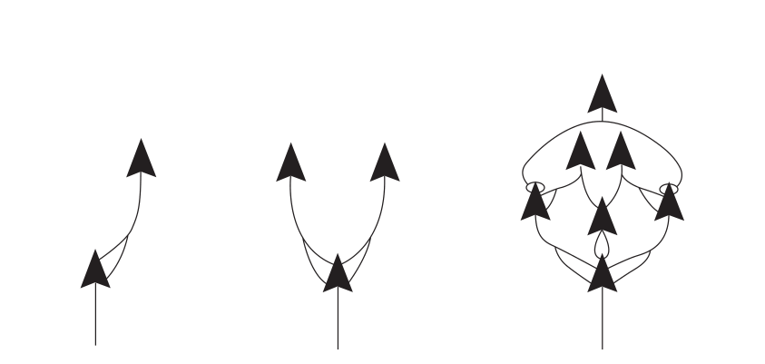

Chương 16 — Khoa học thần kinh lý thuyết: Não bộ như máy tính và máy tính như bộ não
Chương 16
Khoa học Thần kinh Lý thuyết: Bộ não như một Máy tính và Máy tính như một Bộ não
Giữa thế kỷ XX đánh dấu sự xuất hiện của một số lĩnh vực mới đặt nền móng cho các lý thuyết tổng quát về chức năng não bộ. McCulloch và Pitts đã áp dụng phép ẩn dụ logic ký hiệu vào các mạch tế bào thần kinh, đặt ra giả thuyết rằng các kết nối liên hợp đặc hiệu có thể thực hiện các hàm logic cơ bản như cổng AND, OR và AND–NOT. John von Neumann đã dựa trên ý tưởng này về bộ não để xây dựng kiến trúc cổ điển của máy tính kỹ thuật số. Một lĩnh vực mới là lý thuyết trò chơi đã nảy sinh từ công trình tiên phong của von Neumann và Morgenstern. Shannon và Weaver đã thiết lập ngành học mới là lý thuyết thông tin, vốn trở thành khuôn khổ cho kỷ nguyên máy tính. Những phát triển trong lý thuyết điều khiển, thần kinh học và hành vi thích nghi đã hội tụ trong lĩnh vực mới là điều khiển học (cybernetics). Các tế bào thần kinh đơn giản hóa quá mức của McCulloch-Pitts đã góp phần vào sự trỗi dậy của trí tuệ nhân tạo và mạng thần kinh nhân tạo. Cuối cùng, von Neumann nhận ra rằng các phần tử tính toán cơ bản của hệ thần kinh không phải là các tế bào thần kinh đơn giản hóa quá mức mà là từng synapse riêng lẻ phân bố trên các cây đuôi gai. Nhận thức sâu sắc này đã dự báo cho công trình hiện nay về việc phát triển các mạng thần kinh quy mô lớn thực tế hơn, dựa trên các nghiên cứu ở mọi cấp độ tổ chức được đề cập trong cuốn sách này, nhằm mô phỏng cách bộ não thực sự thực hiện các chức năng của nó.
Sự ra đời của khoa học thần kinh hiện đại rõ ràng được thúc đẩy bởi những tiến bộ thực nghiệm. Tuy nhiên, độc giả tinh ý sẽ nhận thấy rằng lý thuyết thực tế đã đóng một vai trò then chốt. Một số tiến bộ chính liên quan đến các loại mô hình toán học và/hoặc lý thuyết cụ thể được tóm tắt trong Bảng 16.1.
Ngoài những tiến bộ này ở các cấp độ tổ chức chức năng cụ thể, thách thức tối hậu trong khoa học thần kinh là xây dựng một lý thuyết áp dụng cho
Bảng 16.1 Đóng góp của Lý thuyết đối với các Chức năng Cụ thể của Tế bào Thần kinh
Mô hình vật lý của DNA bởi Watson và Crick (Chương 2) Lý thuyết màng trường hằng số của Goldman-Hodgkin-Huxley (Chương 4) Mô hình toán học về điện thế hoạt động thần kinh của Hodgkin và Huxley (Chương 4) Lý thuyết Poisson/nhị thức cho sự giải phóng túi synapse của del Castillo và Katz (Chương 5) Lý thuyết phân nhánh đuôi gai của Rall (Chương 6) Lý thuyết học tập synapse của Hebb (Chương 10) Chuyển hóa năng lượng của não (Chương 14)
Bảng 16.2 Các Bước Đầu tiên Hướng tới một Lý thuyết về Chức năng Não bộ
Logic ký hiệu (Boole, 1854; Shannon, 1937; McCulloch và Pitts, 1943) Bộ não như một máy tính (von Neumann, 1945, 1957) Lý thuyết trò chơi (von Neumann và Morgenstern, 1944) Lý thuyết thông tin (Shannon và Weaver, 1948) Điều khiển học (Wiener, 1948) ‘‘Tập hợp tế bào’’ (Hebb, 1949) Trí tuệ nhân tạo và mạng thần kinh (thập niên 1950)
toàn bộ bộ não. Nếu xung thần kinh và synapse là những phần tử phổ quát của hệ thần kinh, làm thế nào chúng ta có thể xây dựng một lý thuyết tổng thể về cách chúng vận hành một cách tích hợp để cấu thành cơ sở thần kinh của hành vi, và đặc biệt là của tư duy và cảm xúc con người? Nhiều người cảm thấy đây chính là chén thánh của khoa học não bộ.
Phải đến giữa thế kỷ XX, mục tiêu này mới có thể được hình thành một cách thực tế và những nỗ lực để đạt được nó mới có thể bắt đầu. Ở đây, chúng ta tóm tắt một số sáng kiến quan trọng nhất trong giai đoạn này (Bảng 16.2). Như chúng ta sẽ thấy, ‘‘những người khổng lồ đã bước đi trên mặt đất’’, cũng như rất nhiều người khác mà chúng ta đã thảo luận trong giai đoạn này. Trong nỗ lực này, máy tính—báo hiệu kỷ nguyên thông tin mới—và bộ não đã đan xen vào nhau một cách đáng kinh ngạc.
Phép ẩn dụ của Logic Ký hiệu
Một lý thuyết đòi hỏi các quy tắc nghiêm ngặt. Làm thế nào sự đa dạng của tư duy con người do bộ não tạo ra có thể được biểu diễn một cách đơn giản?
Ý tưởng rằng tư duy có thể được đặc trưng bởi các quy tắc logic đã được phát triển bởi George Boole (1815–64), một giáo sư toán học ở Ireland. Chuyên luận chính của ông, có tựa đề ‘‘An Investigation of the Laws of Thought, on Which Are Founded the Mathematical Theories of Logic and Probabilities’’ (Khảo sát về các Quy luật Tư duy, Nền tảng của các Lý thuyết Toán học về Logic và Xác suất) năm 1854, đã trình bày chi tiết các quy tắc mà theo đó sự kết hợp của các mệnh đề đơn giản, chẳng hạn như ‘‘cái này và cái này’’, ‘‘cái này hoặc cái này’’, và ‘‘cái này và không phải cái này’’, có thể được hình thức hóa thành các quy tắc AND, OR và AND–NOT cho suy luận logic.
Các nghiên cứu sâu rộng của Boole đã trở nên nổi tiếng trong giới học giả lý thuyết logic nhưng ngoài ra vẫn ít được biết đến và dường như không có nhiều ứng dụng thực tế trong thế giới thực. Tuy nhiên, ông đã mang một ý nghĩa mới khi được tái khám phá vào thập niên 1930 bởi Claude Shannon (1916–2001) khi đang theo học một lớp triết học thời còn là sinh viên đại học tại Đại học Michigan:
Shannon nhận ra rằng công trình của Boole có thể tạo thành cơ sở cho các cơ chế và quy trình trong thế giới thực. . . . Shannon tiếp tục viết luận văn thạc sĩ tại Viện Công nghệ Massachusetts (MIT), trong đó ông chỉ ra cách đại số Boolean có thể tối ưu hóa thiết kế của các hệ thống rơ-le điện cơ khi đó được dùng trong các bộ chuyển mạch định tuyến điện thoại. Ông cũng chứng minh rằng các mạch có rơ-le có thể giải quyết các bài toán đại số Boolean. Việc sử dụng các đặc tính của công tắc điện để xử lý logic là khái niệm cơ bản làm nền tảng cho tất cả các máy tính kỹ thuật số điện tử hiện đại. . . . Đại số Boolean đã trở thành nền tảng của thiết kế mạch kỹ thuật số thực tế; và Boole, thông qua Shannon và Shestakov [ở Liên Xô], đã cung cấp cơ sở lý thuyết cho Kỷ nguyên Kỹ thuật số.
(http://en.wikipedia.org/wiki/George_Boole)
Luận văn đó từ lâu đã được ca ngợi là một trong những luận văn thạc sĩ có ý nghĩa nhất của thế kỷ XX. Xét trên mọi phương diện, việc sử dụng mã nhị phân và đại số Boolean của nó đã mở đường cho mạch kỹ thuật số, yếu tố tối quan trọng đối với hoạt động của máy tính và thiết bị viễn thông hiện đại (Emerson, 2001).
Boole cũng đã gợi ý rằng cách tiếp cận của ông có những hàm ý cho việc hiểu về bộ não:
. . . không thể thiết lập được phương pháp tổng quát nào để giải quyết các câu hỏi trong lý thuyết xác suất mà không thừa nhận một cách rõ ràng . . . những quy luật tư duy phổ quát vốn là cơ sở của mọi lập luận . . .
(http://www.kerryr.net/pioneers/boole.htm)
Làm thế nào những ‘‘quy luật tư duy phổ quát’’ như vậy có thể được triển khai trong não bộ là đối tượng của một nghiên cứu được công bố bởi Warren McCulloch (1898–1969) và Walter Pitts (1923–69) vào năm 1943, công trình đóng vai trò tiên phong cho cả sự phát triển máy tính và khoa học thần kinh lý thuyết. Chúng ta đã gặp họ với tư cách là những cộng tác viên về sau này trong nghiên cứu về việc mắt ếch nói gì với não ếch (Chương 10).
Warren McCulloch theo học chuyên ngành triết học và tâm lý học tại Đại học Yale, nơi ông được truyền cảm hứng từ Descartes và Leibniz để suy nghĩ về cơ sở vật lý của bộ não và tâm trí. Sau khi lấy bằng bác sĩ y khoa (MD) vào thập niên 1920,
. . . bất chấp cuộc sống bận rộn của một bác sĩ nội trú, tôi vẫn luôn nghiên cứu bất cứ thứ gì có thể dẫn tôi đến một lý thuyết về chức năng thần kinh. Người bạn nội trú cùng khoa . . . buộc tội tôi đang cố viết một phương trình cho hoạt động của bộ não. Tôi vẫn đang cố gắng làm điều đó!
(Morena-Diaz và Morena-Diaz, 2007)
Khi cuộc Đại Khủng hoảng ập đến vào đầu thập niên 1930, ông dành thời gian giảng dạy tâm lý học đại học và nghiên cứu toán học và vật lý. Năm 1934, ông chuyển sang nghiên cứu sinh lý học thần kinh với một nhân vật hàng đầu, Dusser de Barenne, tại Yale. Trong nhiều năm, họ đã nghiên cứu các kết nối trong vỏ não bằng cách kích hoạt nhân tạo thông qua việc bôi strychnine tại chỗ, chất này ức chế sự ức chế để gây ra sự kích hoạt mạnh mẽ ở các đích xa.
Walter Pitts là một thần đồng, đến năm 12 tuổi (1935) đã học logic, toán học, tiếng Latin và tiếng Hy Lạp, cùng nhiều môn học khác. Một phần huyền thoại về Pitts là ông đã thư từ qua lại với Bertrand Russell, phê bình một số khía cạnh trong kiệt tác Principia Mathematica của Russell viết cùng Alfred North Whitehead. Quyết định trở thành một nhà logic học, năm 15 tuổi ông bỏ nhà ra đi và dù vô gia cư, vẫn quanh quẩn ở Đại học Chicago, tham dự các bài giảng của Rudolf Carnap về logic và chủ nghĩa thực chứng logic, đồng thời tham gia thảo luận chi tiết với nhà triết học này về công trình của ông. Trong thời gian này, ông được Jerry Lettvin kết bạn và giúp đỡ (Chương 10).
McCulloch chuyển từ Yale đến Chicago vào năm 1941 và ngay sau đó gặp Pitts và Lettvin rồi mời họ đến sống cùng mình. Những cuộc trò chuyện của họ xoay quanh tất cả các nhà triết học và nhà khoa học mà họ đã nghiên cứu qua nhiều năm. Những ý tưởng của Leibniz về tư duy ký hiệu, vốn đi trước Boole, đặc biệt kích thích họ. Từ những cuộc trò chuyện đó đã nảy sinh ý tưởng cho một bài báo: ‘‘A Logical Calculus of the Ideas Immanent in Nervous Activity’’ (Phép tính Logic của các Ý niệm Nội tại trong Hoạt động Thần kinh), công bố năm 1943 trên tạp chí Bulletin of Mathematical Biophysics (McCulloch và Pitts, 1943).
Họ lưu ý rằng ‘‘do tính chất tất cả-hoặc-không (all-or-none) của hoạt động thần kinh, các sự kiện thần kinh và các mối quan hệ giữa chúng có thể được xử lý bằng logic mệnh đề.’’ Theo quan điểm này, tính chất tất cả-hoặc-không của điện thế hoạt động (tức xung thần kinh) trong các sợi trục thần kinh đại diện cho một cổng logic ở trạng thái bật hoặc tắt, và do đó tạo ra một logic hai giá trị làm nền tảng cho mọi hoạt động tinh thần. Họ minh họa ý tưởng này bằng các sơ đồ tế bào thần kinh được kết nối với nhau theo những cách cụ thể để tạo ra các hàm logic cơ bản là AND, OR và AND–NOT (xem Hình 16.1) cũng như các hàm logic phức tạp hơn khác.
Khung khái niệm này bị hầu hết các nhà sinh lý học thần kinh phản đối vì quá đơn giản, khi họ bắt đầu tìm hiểu về các điện thế phân bậc (graded potentials) tại các khớp nối synapse giữa các tế bào thần kinh. Ngoài ra, ý tưởng quy giản một tế bào thần kinh xuống chỉ còn một nút duy nhất, đại diện cho thân tế bào, đã bỏ qua các cây đuôi gai phức tạp của hầu hết các tế bào thần kinh vốn đã được thể hiện rất tinh tế trong các nghiên cứu bằng phương pháp nhuộm Golgi của Golgi, Ramón y Cajal và các nhà mô học cổ điển (Chương 8). Do đó, phép tính logic của McCulloch và Pitts đóng vai trò rất nhỏ trong sự trỗi dậy của khoa học thần kinh thực nghiệm vào giữa thế kỷ. Tuy nhiên, sự phát triển của máy tính kỹ thuật số lại là một câu chuyện khác.
Máy tính và Bộ não
Giữa thế kỷ chứng kiến sự phát minh và trỗi dậy của máy tính kỹ thuật số, thứ đã trở thành một trong những thiết bị định hình cuộc sống hiện đại. Phép ẩn dụ dường như là—và vẫn là—hiển nhiên: Bộ não xử lý thông tin, và máy tính cũng vậy. Quả thực, sự trỗi dậy của máy tính và sự trỗi dậy của khoa học thần kinh lý thuyết gắn bó chặt chẽ với nhau. Điều này đã diễn ra như thế nào ngày nay ít được nhớ đến, nhưng lại là một trong những chương hấp dẫn nhất trong cuộc cách mạng của khoa học thần kinh giữa thế kỷ.
Có nhiều người nhận công phát minh ra máy tính kỹ thuật số, rõ ràng nhất là John Atanasoff (1903–95). Ông là giáo sư vật lý tại Cao đẳng Bang Iowa ở Ames, Iowa. Tôi lớn lên cách nhà ông chỉ một dãy phố. Giống như nhiều nhà vật lý khác, Atanasoff sử dụng máy phân tích vi phân Bush để giải các hệ phương trình đồng thời lớn. Vào thập niên 1930, ông bắt đầu phát triển ý niệm thay thế nó bằng một thiết bị hoàn toàn kỹ thuật số, nhanh hơn. Vật lộn với những ý tưởng chưa thành hình, ông đã thực hiện một chuyến lái xe ô tô huyền thoại ‘‘với tốc độ cao’’ (Atanasoff, 1984) băng qua tiểu bang vào giữa đêm năm 1939 và bất chợt nảy ra những ý tưởng chính của thiết bị mới: Nó sẽ sử dụng điện và điện tử, các phép tính sẽ dùng hệ cơ số 2 (nhị phân), các phép tính sẽ được lưu trữ trong bộ nhớ, và việc tính toán sẽ diễn ra ‘‘bằng hành động logic trực tiếp, chứ không phải bằng phép đếm.’’ Trong 2 năm tiếp theo, ông đã chế tạo một nguyên mẫu của chiếc máy tính này cùng với một nghiên cứu sinh, Clifford Berry; họ đặt tên cho nó rất phù hợp là ‘‘ABC’’.
Các tài liệu lịch sử máy tính chính thức ghi nhận rằng trong thời gian này, một số người khác cũng đang làm việc với cùng mục đích. Konrad Zuse ở Đức là một ví dụ; cỗ máy của ông cũng chạy bằng điện tử, được chia thành đơn vị tính toán, đơn vị bộ nhớ, đơn vị điều khiển, cùng các đơn vị nhập (‘‘chương trình’’) và xuất. Tuy nhiên, khi Đức tham chiến vào năm 1939, dự án của ông bị phớt lờ. Trong khi đó, ở Anh, Alan Turing, một nhà toán học trẻ, đã viết một bài báo năm 1936 có tựa đề ‘‘On Computable Numbers, with an Application to the Entscheidungsproblem [bài toán quyết định].’’ Trong đó, ông hình dung ra một cỗ máy có thể đọc một cuộn băng dài vô tận theo cách logic kỹ thuật số và về nguyên tắc có thể tính toán bất kỳ con số nào. Mặc dù một ‘‘máy Turing’’ chưa bao giờ được chế tạo, nó đã trở thành biểu tượng (và vẫn là biểu tượng) của một máy tính kỹ thuật số với năng lực tính toán không giới hạn.
Trong khi chế tạo nguyên mẫu của mình, Atanasoff đã tham dự một hội nghị và gặp John Mauchly, người cũng đang thực hiện các phép tính quy mô lớn liên quan đến khí hậu. Mauchly rất hứng thú khi nghe về dự án của Atanasoff và đã có chuyến thăm kéo dài vài ngày vào đầu năm 1941 để xem xét cỗ máy và đọc bản mô tả dài mà Atanasoff đang chuẩn bị để nộp xin cấp bằng sáng chế. Chiến tranh nổ ra đã làm gián đoạn, và bằng sáng chế không bao giờ được nộp; nhưng Mauchly đã nhìn thấy tương lai. Ông trở về Philadelphia và theo học một khóa về điện tử học nâng cao tại Trường Kỹ thuật Moore thuộc Đại học Pennsylvania. Tại đó, ông gặp J. Presper Eckert, một nghiên cứu sinh trẻ xuất sắc ngành kỹ thuật điện đang phụ giảng khóa học.
Họ rất tâm đầu ý hợp và cùng nhau lên kế hoạch chế tạo một chiếc máy tính hoàn toàn điện tử, sử dụng đèn chân không thay vì tụ điện cho bộ nhớ. Một cỗ máy như vậy sẽ hữu ích cho Quân đội trong việc tính toán quỹ đạo đạn đạo để ngắm bắn pháo binh. Vào tháng 8 năm 1942, Mauchly đệ trình một đề xuất lên Cục Quân khí thuộc Bộ Chiến tranh, đề xuất ‘‘Sử dụng các thiết bị đèn chân không tốc độ cao để tính toán.’’ Đề xuất cuối cùng đã được thông qua và cấp kinh phí vào tháng 6 năm 1943. Cỗ máy được chế tạo có tên là ‘‘ENIAC’’, viết tắt của
‘‘Electronic Numerical Integrator and Computer’’ (Máy tính và Bộ tích phân Số Điện tử). (Đây là một ví dụ khác về việc các lực lượng vũ trang tài trợ cho công nghệ mới.)
Những cải tiến mới là ENIAC có kích thước lớn (20.000 đèn chân không), rất nhanh (200.000 xung mỗi giây), có thể lập trình và đa năng. Nó cao 8 feet và dài 80 feet, báo trước kỷ nguyên của các máy tính lớn (mainframe) cỡ bằng cả căn phòng. Dự án không hoàn thành cho đến cuối năm 1945, nên thực tế ENIAC đã không đóng góp được cho nỗ lực chiến tranh như kỳ vọng. Tuy nhiên, nó ngay lập tức được xem là một thành công vang dội, mở ra kỷ nguyên máy tính.
John von Neumann. Yếu tố thiết yếu đối với máy tính là chương trình, và đó là nơi John von Neumann và bộ não bước vào câu chuyện.
Ông sinh ra tại Budapest, Hungary, vào năm 1903. Là một thần đồng, ông tốt nghiệp ngành toán học ở Budapest và kỹ thuật hóa học tại Eidgenössische Technische Hochschule (Viện Công nghệ Liên bang) ở Zurich vào năm 1925. Ông giảng dạy và công bố công trình rất năng suất trong vài năm. Năm 1930, ông di cư sang Hoa Kỳ và năm 1933 được bổ nhiệm làm một trong những giảng viên đầu tiên của Viện Nghiên cứu Cao cấp tại Princeton. Trong thời gian ở đó, ông trở thành người dẫn đầu trong nhiều lĩnh vực, bao gồm lý thuyết tập hợp, giải tích hàm, cơ học lượng tử, giải tích số và thống kê. Khi Thế chiến II bùng nổ, ông trở thành thành viên của Dự án Manhattan nhằm chế tạo bom nguyên tử.
Chính trong thời gian tham gia Dự án Manhattan, ông đã nghe nói về ENIAC. Khi ENIAC đang được triển khai, Mauchly và Eckert đã hình dung về thế hệ máy tính tiếp theo, vốn sẽ có một chương trình được lưu trữ để chạy các phép tính thông qua bộ xử lý trung tâm và một bộ nhớ cho cả dữ liệu từ các phép tính lẫn các chương trình vận hành chúng. Dựa trên kế hoạch của họ, người đứng đầu Phòng thí nghiệm Nghiên cứu Đạn đạo, Herman Goldstine, đã nộp đơn xin tài trợ, một lần nữa từ Cục Quân khí, vào tháng 10 năm 1944 để chế tạo EDVAC (‘‘Electronic Discrete Variable Computer’’ – Máy tính Biến Rời rạc Điện tử).
Khi von Neumann tình cờ nghe về các dự án ENIAC và EDVAC, ông lập tức quan tâm đến một khía cạnh then chốt: Cấu trúc logic của chúng là gì? Ông đã mang lại uy tín trí tuệ đáng kể cho các dự án vốn đang bị Vannevar Bush và các nhà vật lý hàng đầu khác chỉ trích gay gắt là quá chậm và lãng phí tiền bạc (Augarten, 1984). Điều này thật trớ trêu vì vai trò chủ chốt của Bush với tư cách là cố vấn khoa học cho tổng thống và là kiến trúc sư thông thái của việc chính phủ tài trợ cho khoa học sau chiến tranh. Để ngăn von Neumann can thiệp vào các dự án, Bush đã cố gắng chặn mọi thông tin về chúng đến tai ông. Tuy nhiên, von Neumann không phải là người dễ bị ngăn cản.
von Neumann trở thành cố vấn cho dự án và vào tháng 6 năm 1945 đã viết một bản thảo dài 101 trang có tựa đề First Draft of a Report on the EDVAC (Bản thảo Đầu tiên của Báo cáo về EDVAC) về các kế hoạch cho EDVAC và cụ thể là về thiết kế điều khiển logic:
Tóm lại, von Neumann đề xuất chế tạo một máy tính dựa trên một đơn vị điều khiển trung tâm sẽ điều phối mọi hoạt động; một đơn vị xử lý trung tâm sẽ thực hiện mọi phép toán số học và logic; và một bộ nhớ đọc/ghi truy cập ngẫu nhiên (đây là thuật ngữ đương đại) sẽ lưu trữ các chương trình và dữ liệu sao cho bất kỳ mẩu thông tin nào cũng có thể được nhập vào hoặc truy xuất trực tiếp (thay vì tuần tự). Ông cũng đề xuất sử dụng các từ nhị phân theo chuỗi nối tiếp thay vì song song. Nói cách khác, thay vì xử lý mọi bit trong một từ cùng một lúc như ENIAC đã làm, EDVAC sẽ xử lý từng bit một. Nếu mọi thứ khác như nhau, máy tính song song nhanh hơn máy tính nối tiếp, nhưng khó chế tạo hơn—đó là lý do cho đề xuất của von Neumann.
(Augarten, 1984, 140)
Đây là bản mô tả đầu tiên về thiết kế của một máy tính điện tử kỹ thuật số đa năng. Xuất phát từ von Neumann, nó ngay lập tức mang lại cho ông sự công nhận là người sáng tạo ra máy tính hiện đại, điều đã dẫn đến nhiều năm tranh cãi về vai trò của ông so với Mauchly và Eckert, bao gồm cả vấn đề tất yếu về quyền sở hữu bằng sáng chế.
Nguồn gốc các ý tưởng của von Neumann là từ đâu? Rõ ràng có tài năng toán học của ông. Nhưng có hai nguồn khả dĩ khác trước đây chưa được nhấn mạnh. Một là Atanasoff. Năm 1946, Atanasoff được giao phụ trách một chương trình mới để chế tạo máy tính tại Phòng thí nghiệm Quân khí Hải quân. Nhưng sau vài tháng, ông được thông báo tại một cuộc họp rằng dự án máy tính đã bị hủy bỏ. Atanasoff sau này nhớ lại rằng von Neumann có mặt tại cuộc họp đó và đã khen ngợi Atanasoff về năng lực tính toán của ông. Người ta có thể suy đoán rằng von Neumann có thể đã liên kết với Mauchly để dập tắt bất kỳ sự cạnh tranh nào từ một phòng thí nghiệm quân khí khác—đồng thời, von Neumann, khi đề xuất sử dụng logic nhị phân để chế tạo EDVAC, hẳn phải biết rằng ông đang đi theo bước chân của Atanasoff, người đã chế tạo cỗ máy đầu tiên của mình dựa trên cơ sở này.
Nguồn còn lại chính là bộ não. von Neumann đã gặp McCulloch tại một loạt hội nghị do Quỹ Macy tổ chức nhằm tập hợp các nhà nghiên cứu từ các lĩnh vực khác nhau đang làm việc trong lĩnh vực lý thuyết thông tin và điều khiển. Theo McCulloch (trong Moreno-Diaz và Moreno-Diaz, 2007, 186), ‘‘von Neumann đã sử dụng bài báo của chúng tôi để giảng dạy lý thuyết tổng quát về máy tính kỹ thuật số . . .’’ Bằng chứng cho vai trò then chốt này của bộ não như một hình mẫu cho máy tính được tìm thấy ở nhiều chỗ trong ‘‘Bản thảo Đầu tiên’’ của ông (xem thêm Burks, 2003):
2.6 Các bộ phận cụ thể [số học trung tâm, điều khiển trung tâm, bộ nhớ] tương ứng với các tế bào thần kinh liên hợp trong hệ thần kinh con người. Phần còn lại là thảo luận về các thành phần tương đương với tế bào thần kinh cảm giác hay hướng tâm và tế bào thần kinh vận động hay ly tâm. Đây là các cơ quan nhập và xuất của thiết bị.
4.2 Điều đáng nói là các tế bào thần kinh của động vật bậc cao chắc chắn là những phần tử [để tính toán] theo nghĩa trên. Chúng có tính chất tất cả-hoặc-không, tức là hai trạng thái: Tĩnh (quiescent) và hưng phấn (excited). . . . Một tế bào thần kinh bị hưng phấn phát ra kích thích chuẩn dọc theo nhiều đường (sợi trục). Tuy nhiên, một đường như vậy có thể được kết nối theo hai cách khác nhau với tế bào thần kinh tiếp theo: Thứ nhất: Trong một synapse kích thích, sao cho kích thích gây ra sự hưng phấn của tế bào thần kinh. Thứ hai: Trong một synapse ức chế, sao cho kích thích ngăn chặn tuyệt đối sự hưng phấn của tế bào thần kinh bởi bất kỳ kích thích nào trên bất kỳ synapse (kích thích) nào khác. Tế bào thần kinh cũng có một thời gian phản ứng xác định, giữa lúc tiếp nhận kích thích và lúc phát ra các kích thích do nó gây ra, gọi là độ trễ synapse. [Điều này xuất hiện một thập kỷ trước khi công trình của Eccles tiết lộ những đặc tính này ở các tế bào thần kinh trung ương—Chương 7].
Theo W. S. MacCulloch [sic] và W. Pitts . . . chúng ta bỏ qua các khía cạnh phức tạp hơn của chức năng tế bào thần kinh: Ngưỡng, sự cộng gộp theo thời gian, ức chế tương đối, những thay đổi của ngưỡng do hậu quả của kích thích vượt quá độ trễ synapse, v.v. Tuy nhiên, đôi khi sẽ thuận tiện khi xem xét các tế bào thần kinh có ngưỡng cố định là 2 và 3, tức là các tế bào thần kinh chỉ có thể bị hưng phấn bởi các kích thích (đồng thời) trên 2 hoặc 3 synapse kích thích (và không có kích thích nào trên synapse ức chế). . . .
Dễ dàng nhận thấy rằng các chức năng tế bào thần kinh đơn giản hóa này có thể được mô phỏng bằng rơ-le điện báo hoặc bằng đèn chân không. Mặc dù hệ thần kinh có lẽ hoạt động bất đồng bộ (đối với độ trễ synapse), các độ trễ synapse chính xác có thể đạt được bằng cách sử dụng các thiết lập đồng bộ.
4.3 Rõ ràng một thiết bị tính toán tốc độ rất cao lý tưởng nhất nên có các phần tử đèn chân không. Các cụm đèn chân không như bộ đếm và bộ chia tỷ lệ đã được sử dụng và cho thấy độ tin cậy ở thời gian phản ứng (độ trễ synapse) ngắn tới một micro-giây. . . . Thật thú vị khi lưu ý rằng thời gian synapse của một tế bào thần kinh người vào khoảng một mili-giây. . . .
5.0 Các nguyên lý chi phối phép toán số học . . . Các phần tử tương tự với tế bào thần kinh người, được thảo luận trong mục 4.2–4.3, cũng đều là các phần tử tất cả-hoặc-không. Sẽ thấy rằng chúng khá hữu ích cho mọi cân nhắc sơ bộ, định hướng về các hệ thống đèn chân không. . . . Do đó, thật thỏa đáng khi ở đây hệ thống số học tự nhiên cần xử lý cũng là hệ nhị phân [như trong cỗ máy ban đầu của Atanasoff nhưng không phải ENIAC].
Những đoạn văn này làm sáng tỏ một nghịch lý thú vị: Chính sự quy giản phi thực tế của McCulloch và Pitts đối với tế bào thần kinh thành một nút cộng đơn lẻ đã cho phép von Neumann sử dụng bộ não làm hình mẫu để chế tạo máy tính.
Hiện nay, các nhà khoa học thần kinh phân tích bộ não như một máy tính. Vào thuở ban đầu, máy tính được chế tạo để giống với bộ não. Chúng ta sẽ thấy rằng von Neumann đã quay trở lại xem xét chi tiết hơn nhiều về bộ não như một máy tính vào cuối đời ông năm 1957.
Lý thuyết Trò chơi
Như một ví dụ về phạm vi thành tựu to lớn của von Neumann, năm 1944 ông đồng tác giả với Oskar Morgenstern một cuốn sách dày, đầy ắp phương trình, có tựa đề Theory of Games and Economic Behavior (Lý thuyết Trò chơi và Hành vi Kinh tế). Các bài điểm sách thời đó đã ca ngợi tầm quan trọng của cuốn sách này. Copeland, trên tạp chí Bulletin of the American Mathematical Society, viết rằng ‘‘Hậu thế có thể coi cuốn sách này là một trong những thành tựu khoa học vĩ đại nhất của nửa đầu thế kỷ XX’’ (Kuhn, 2004, viii). Hurwitz, trên tạp chí American Economic Review, viết rằng ‘‘các kỹ thuật . . . có tính tổng quát đủ để có giá trị trong khoa học chính trị, xã hội học, hoặc thậm chí chiến lược quân sự’’ (Kuhn, 2004, viii). Tầm quan trọng này được Harold Kuhn (2004, xii-xiii) mô tả thêm trong lời giới thiệu cho Ấn bản Kỷ niệm Sáu mươi năm:
Giai đoạn cuối thập niên 40 và đầu thập niên 50 là một giai đoạn đầy hứng khởi trong lý thuyết trò chơi. Ngành học này đã thoát khỏi kén và đang thử sức đôi cánh. Những người khổng lồ đã bước đi trên mặt đất. Tại Princeton, John Nash đã đặt nền móng cho lý thuyết trò chơi không hợp tác tổng quát và lý thuyết mặc cả hợp tác. Lloyd Shapley định nghĩa giá trị cho các trò chơi có điều kiện, khởi xướng lý thuyết trò chơi ngẫu nhiên, đồng phát minh ra khái niệm lõi (core) cùng với D. B. Gillies, và cùng với John Milner phát triển các mô hình trò chơi đầu tiên với số lượng người chơi vô hạn. Harold Kuhn cải cách dạng mở rộng và đưa ra các khái niệm về chiến lược hành vi và khả năng nhớ hoàn hảo. A. W. Tucker sáng tạo ra câu chuyện Thế lưỡng nan của Người tù (Prisoner’s Dilemma), vốn đã đi vào văn hóa đại chúng như một ví dụ cốt yếu về sự tương tác giữa cạnh tranh và hợp tác.
Với sự phát triển trong những năm gần đây của các phương pháp thực hiện các mô thức lý thuyết trò chơi ở các loài linh trưởng tỉnh táo, đang thực hiện hành vi, các nguyên lý này đang mở rộng sâu sắc vào các nghiên cứu hiện tại trong khoa học thần kinh hành vi và nhận thức. Chúng không chỉ mang lại cái nhìn sâu sắc về các cơ chế thần kinh mà còn đóng góp vào các lĩnh vực nhánh mới như kinh tế học thần kinh (neuroeconomics). Đồng nghiệp của tôi, Daeyol Lee, người sử dụng các mô thức lý thuyết trò chơi để nghiên cứu việc ra quyết định trong hoạt động của từng tế bào thần kinh đơn lẻ ở vỏ não trước trán của khỉ, khẳng định rằng cuốn sách của von Neumann và Morgenstern là cuốn sách khoa học vĩ đại nhất thế kỷ XX. Chúng ta đã thấy (Chương 12) rằng một lập luận mạnh mẽ cũng đã được đưa ra cho cuốn Organization of Behavior của Hebb.
Lý thuyết Thông tin
Một lĩnh vực mới khác sắp sửa được phát minh. Luận văn của Shannon về các nguyên lý Boolean đã mang lại cho ông sự công nhận tức thì, mở ra cánh cửa cho việc đào tạo chuyên sâu hơn trong những hoàn cảnh kích thích nhất. Điều này bao gồm bằng tiến sĩ tại MIT, Học bổng Nghiên cứu Quốc gia tại Viện Nghiên cứu Cao cấp ở Princeton, và Bell Labs, viện nghiên cứu công nghiệp hàng đầu thời bấy giờ, vào năm 1942.
Công trình giúp ông được biết đến rộng rãi nhất là cuốn sách The Mathematical Theory of Communication (Lý thuyết Toán học về Truyền thông), mà ông đồng tác giả vào năm 1948 cùng với Warren Weaver; người ta nói rằng Shannon cung cấp phần toán học, còn Weaver giúp làm cho nó dễ hiểu đối với độc giả phổ thông. Thông tin được mô tả bằng các thuật ngữ nhị phân, một bước tiến then chốt hướng tới kỷ nguyên viễn thông hiện đại. Lý thuyết này định nghĩa sự truyền thông giữa bộ phát và bộ thu bằng các thuật ngữ nghiêm ngặt, đặc trưng hóa entropy thông tin như một thước đo độ bất định trong thông điệp. Cuốn sách được coi là tài liệu nền tảng của lý thuyết thông tin và kỷ nguyên thông tin. Vào thời điểm đó chúng tôi biết rằng mình đang bước vào kỷ nguyên này. Ý tưởng rằng truyền thông điện tử có thể được đặc trưng bằng các thuật ngữ nghiêm ngặt mang tính biểu tượng. Theo nghĩa này, cuốn sách này cũng là một đối thủ xứng tầm với cuốn sách của von Neumann và Morgenstern.
Tác động của công trình này là tức thì và sâu rộng. Được ca ngợi là ‘‘Đại Hiến chương (Magna Carta) của kỷ nguyên thông tin’’, các ngành học đa dạng như khoa học máy tính, kỹ thuật di truyền và giải phẫu thần kinh đã sử dụng các khám phá của Shannon để giải quyết những bài toán hóc búa khác nhau như các vấn đề về mã sửa lỗi máy tính và entropy sinh học.
(http://www.kerryr.net/pioneers/shannon.htm)
Shannon trở lại MIT vào năm 1956, nơi ông ở lại cho đến khi nghỉ hưu năm 1978. Những thành tựu phi thường của ông đóng vai trò công cụ trong việc sáng lập và làm giàu nhiều lĩnh vực khoa học.
Việc phân tích mã hóa thông điệp trong các đợt phóng xung ở tế bào thần kinh, sử dụng các nguyên lý của lý thuyết thông tin, sau này được Juan Segundo và các đồng nghiệp tiếp tục thực hiện vào thập niên 1960 và 1970.
Điều khiển học (Cybernetics)
Một thần đồng toán học khác trong giai đoạn này (đó là một kỷ nguyên vĩ đại cho các nhà toán học và ca sĩ opera, bên cạnh các nhà khoa học thần kinh) là Norbert Wiener (1894–1964). Là con trai của một giáo sư Harvard, ông chủ yếu được dạy học tại nhà, tốt nghiệp trung học năm 11 tuổi, tốt nghiệp Cao đẳng Tufts năm 14 tuổi và lấy bằng tiến sĩ tại Harvard năm 18 tuổi chuyên ngành logic toán học. Việc học tập thêm ở nước ngoài trước Thế chiến I đã giúp ông tiếp xúc với Russell, Hilbert và các nhà toán học, triết học hàng đầu khác. Sau Thế chiến I, ông bị từ chối chức giáo sư tại Harvard, giống như hầu hết người Do Thái thời đó ở đó và những nơi khác, và gia nhập giảng viên tại MIT, nơi ông gắn bó suốt sự nghiệp của mình. Thập niên 1920 và 1930 được dành cho nhiều vấn đề khác nhau trong toán học. Trong Thế chiến II, ông từ chối tham gia Dự án Manhattan vì lý do đạo đức, thay vào đó làm việc về các vấn đề liên quan đến đạn đạo và lý thuyết truyền thông. Điều này dẫn ông đến việc nghiên cứu lý thuyết điều khiển, nhìn chung liên quan đến các vòng phản hồi để kiểm soát đầu ra của một hệ thống tại một điểm đặt mong muốn nào đó. Điều này lại dẫn ông đến việc suy nghĩ xem các nguyên lý này có thể áp dụng cho hành vi con người như thế nào.
Vì mục đích này, ông đã tập hợp nhiều nguồn ảnh hưởng, bao gồm phép tính logic của McCulloch và Pitts, các robot tự hành của Grey Walter, và kiến thức đương thời về sinh lý học thần kinh và giải phẫu thần kinh. Khi đến lúc dệt những sợi chỉ này thành một cuốn sách, ông cần một thuật ngữ và đã sáng tạo ra ‘‘cybernetics’’ (điều khiển học), bắt nguồn từ tiếng Hy Lạp có nghĩa là ‘‘người cầm lái’’. Cuốn sách, có tựa đề
Cybernetics, or Control and Communication in the Animal and Machine (Điều khiển học, hay Điều khiển và Truyền thông ở Động vật và Máy móc), thực tế được xuất bản ở Pháp và ra mắt năm 1948.
Điều khiển học đã rơi vào mảnh đất màu mỡ. Nhà thần kinh học Denny-Brown (Chương 13) từng mô tả cho tôi sự sôi sục thời đó, với các nhà nghiên cứu từ Harvard, MIT và các cơ sở khác thường xuyên tụ họp tại các buổi hội thảo buổi tối khắp khu vực Boston để trao đổi dữ liệu và ý tưởng về khái niệm mới và cách nó liên quan đến thần kinh học, thiết kế máy tính, giải phẫu thần kinh, sinh lý học thần kinh, v.v. Bản thân Wiener là một người tham gia nhiệt tình vào tất cả những hoạt động này. Một câu chuyện kể rằng khi Wiener biết đến điện não đồ (EEG), ông đã đặt giả thuyết rằng nhịp alpha nổi bật sẽ tương quan với trí thông minh. Thật không may, các bản ghi EEG của chính ông đã không xác nhận được lý thuyết của ông.
Sự sôi sục này vẫn còn cảm nhận rõ rệt sang tận thập niên 1950, khi tôi làm việc dưới sự hướng dẫn của Walter Rosenblith tại phòng thí nghiệm cũ của Wiener ở Phòng thí nghiệm Nghiên cứu Điện tử (khu doanh trại cũ thời Thế chiến II tồn tại suốt nhiều thập kỷ) tại MIT. Công việc của tôi là vận hành một trong những máy tính tương tự (analog) đời đầu để thực hiện các phép tự tương quan và tương quan chéo của điện thế vỏ não gợi lên và nhịp tim (Angelakos và Shepherd, 1957). J. C. R. Licklider, kiến trúc sư tương lai của ARPANET, cũng ở quanh đó, cùng với Lettvin, McCulloch và các cộng tác viên. Oliver Selfridge đã tổ chức một buổi hội thảo về kiến trúc máy tính song song so với nối tiếp. Có lần tôi đến gặp McCulloch để xin lời khuyên về việc trở thành một nhà sinh lý học thần kinh. Ông ngồi trong văn phòng nhìn đăm đăm vào khoảng không suốt vài phút, rồi lẩm bẩm ‘‘Tôi đang vật lộn với một vấn đề mà Johnny để lại cho tôi.’’ Sau này tôi kể câu chuyện này cho một đồng nghiệp, Jack Cowan, người từng ở MIT vào thời điểm đó, và ông ấy lập tức nói, ‘‘Ồ, đó là bài toán của von Neumann về việc làm thế nào để có được những bộ não đáng tin cậy từ những tế bào thần kinh không đáng tin cậy!’’
Ý tưởng cơ bản của điều khiển học và lý thuyết điều khiển là khi một hệ thống cảm nhận một đầu vào và tạo ra một đầu ra để đạt được mục tiêu, nó cũng cảm nhận đầu ra đó để so sánh với mục tiêu và điều chỉnh hành động của mình, từ đó tạo ra đầu vào mới. Do đó, các đặc điểm về tín hiệu lỗi, tự tổ chức, tự tái tạo và hành vi hướng mục tiêu chính là nội dung của điều khiển học, mang lại cho nó một di sản lâu dài có ý nghĩa nền tảng đối với việc hiểu bộ não, cũng như đối với hầu như mọi hệ thống động lực học.
Trí tuệ Nhân tạo
Ý tưởng về những cỗ máy có thể hành động như con người đã bắt đầu từ thời cổ đại, nhưng một lần nữa, phải đến giữa thế kỷ XX, các giải pháp thực sự mới trở nên khả thi thông qua sự hợp nhất của nhiều phát triển được mô tả trong chương này. Điều này về cơ bản có nghĩa là các nhà nghiên cứu từ các lĩnh vực khác nhau có thể kết hợp chuyên môn của họ để hiểu một cách tổng quát cách thông tin được con người xử lý và thiết kế các cỗ máy để mô phỏng họ.
Quá trình này có thể nói đã bắt đầu với các Hội nghị Macy vào đầu thập niên 1940, có tên là ‘‘Các Hội nghị về Cơ chế Tuần hoàn, Nhân quả và Phản hồi trong các Hệ thống Sinh học và Xã hội.’’ Một số chủ đề được đề cập bao gồm (xem Moreno-Díaz và Moreno-Díaz, 2007) hoạt động hướng mục tiêu, truyền thông tín hiệu, mạng thần kinh, các vòng vỏ não khép kín (của Lorente de Nó), kinh tế học, tâm thần học, trí nhớ vang dội và trí nhớ định địa chỉ theo nội dung, và lý thuyết học tập. Những người tham dự bao gồm W. Ross Adey, Y. Bar-Hillel, Julian Bigelow, Jan Droogleever-Fortuyyn, W. Grey Walter, Rafael Lorente de Nó, Donald MacKay, Warren McCulloch, J. M. Nielsen, F. S. C. Northrop, Linus Pauling, Antoine Remond, Arturo Rosenblueth, Claude Shannon, Heinz Von Forester, John von Neumann và Norbert Wiener (Morena-Diaz và MorenaDiaz, 2007).
Chúng ta đã thấy rằng những hội nghị này đã thúc đẩy các tương tác kích thích việc von Neumann sử dụng tế bào thần kinh McCulloch-Pitts trong việc xây dựng khái niệm kiến trúc máy tính kỹ thuật số, sự phát triển lý thuyết thông tin của Shannon và điều khiển học của Wiener.
Năm 1947, Pitts và McCulloch công bố bài báo thứ hai có tựa đề ‘‘How We Know Universals: The Perception of Visual and Auditory Forms’’ (Cách chúng ta Nhận biết các Phổ quát: Sự Tri giác các Dạng Thị giác và Thính giác). Bài báo này giải quyết vấn đề làm thế nào để tạo ra sự nhận dạng bất biến đối với một mẫu hình bất chấp các biến dạng. Nó đã đóng góp vào lĩnh vực nhận dạng mẫu (pattern recognition) đang mới nổi.
Vào thập niên 1950, một số bài báo, lấy cảm hứng từ McCulloch và Pitts, đã so sánh các hệ thống nhân tạo với các hệ thống tế bào thần kinh (xem Cowan và Sharp, 1988, để biết tóm tắt và tài liệu tham khảo). Năm 1954, A. M. Uttley đã dựa trên các ý tưởng gần đây của Hebb (Chương 12) để đề xuất rằng các mạng thần kinh với các kết nối synapse có thể biến đổi phụ thuộc vào hoạt động có thể học nhiệm vụ đơn giản là nhận dạng các mẫu kích thích nhị phân. Năm 1955, nhà giải phẫu thần kinh B. G. Cragg và nhà vật lý H. N. V. Temperley công bố một bài báo về các đặc tính của các nguyên tử quay trong một chất sắt từ (sau này gọi là ‘‘thủy tinh spin’’ – spin glass). Các nguyên tử có thể định hướng lên hoặc xuống, tùy thuộc vào các tương tác tất cả-với-tất cả với các nguyên tử lân cận, nhằm tối thiểu hóa tổng năng lượng của hệ thống. Điều này được ví với các tế bào thần kinh có thể ở trạng thái bật hoặc tắt tùy thuộc vào các tương tác với các tế bào thần kinh khác. Họ gợi ý rằng các mẫu thần kinh tương tự được kích thích bởi một đầu vào cảm giác có thể ổn định và do đó hoạt động như một dạng trí nhớ về kích thích đã áp đặt. Năm 1956, R. L. Beurle đã phát triển loại phân tích này sâu hơn dưới góc độ các tế bào thần kinh kết nối ngẫu nhiên.
Các nhánh nghiên cứu khác nhau bắt đầu từ thập niên 1940 trong các công thức logic của McCulloch và Pitts, trong lý thuyết điều khiển và điều khiển học, việc xây dựng lý thuyết thông tin, và sự phát triển của máy tính kỹ thuật số, đã hội tụ vào thập niên 1950 trong một lĩnh vực mới gọi là ‘‘trí tuệ nhân tạo’’ (AI). Theo truyền thuyết, sự kiện châm ngòi là một hội nghị tại Dartmouth vào mùa hè năm 1956. Những cái tên nổi bật nhất là John McCarthy, Marvin Minsky, Allen Newell và Herbert Simon.
Ngành học mới này xuất hiện ngay lập tức. Ngay từ đầu, AI đã được quảng bá với sự thổi phồng đáng kể, tương tự như sự thổi phồng được sử dụng trong việc quảng bá NASA sau khi Sputnik xuất hiện năm 1957. Nó sẽ thay thế bộ não con người bằng bộ não nhân tạo và thay đổi xã hội mãi mãi. Người bạn thân và đồng nghiệp của tôi, Robert Brayton, đến MIT làm nghiên cứu sinh năm 1956, với niềm quan tâm đến lĩnh vực khoa học máy tính mới mẻ, và đã có sự lựa chọn giữa kỹ thuật điện và lĩnh vực AI mới. Ông đã chọn kỹ thuật điện để khởi đầu một sự nghiệp lẫy lừng trong khoa học máy tính.
Có lẽ sáng kiến ban đầu nổi tiếng nhất trong AI và nhận dạng mẫu có khả năng liên quan đến hệ thần kinh là ‘‘perceptron’’ của Frank Rosenblatt năm 1958. Đây là một loại mạng McCulloch-Pitts với các kết nối có thể biến đổi, có thể được ‘‘huấn luyện’’ bằng cách tiếp xúc lặp đi lặp lại để ‘‘học’’ cách phân biệt giữa các mẫu khác nhau. Mạng này bao gồm một lớp đơn các nút đại diện cho các tế bào thần kinh, với các kết nối được điều chỉnh theo hoạt động thích hợp của chúng trong việc đáp ứng với kích thích. Một hệ thống tương tự được mô tả vào năm 1960 bởi Widrow và Hoff, gọi là ‘‘Adaline’’ (tế bào thần kinh tuyến tính thích nghi). Mặc dù các hệ thống này đã khơi dậy sự quan tâm lớn trong cộng đồng AI thời bấy giờ, chúng cuối cùng đã bị Minsky và Papert (1969) chứng minh là không đầy đủ.
Hướng tới Các Mạng Tế bào Thần kinh Thực tế: Lời cuối của von Neumann
Đối với tất cả những người làm việc về hệ thần kinh, vấn đề cơ bản xuyên suốt tất cả những phát triển này là các biểu diễn về hệ thần kinh đều hết sức phi thực tế: các mô hình phân nhánh huy hoàng của đuôi gai bị cắt xén xuống chỉ còn một thân tế bào duy nhất, các đầu vào synapse phân bố ở các mức độ cụ thể của cây đuôi gai bị ép buộc phải tập trung hết vào nút thân tế bào, các kết nối sợi trục tới các thân tế bào và đuôi gai đích cụ thể bị phóng đại thành các tương tác ngẫu nhiên tất cả-với-tất cả, và sự phân hóa thành các synapse một chiều kích thích và ức chế bị thay thế bằng các trọng số synapse có thể điều chỉnh theo cả hai hướng.
Sự quan tâm trở lại đối với mạng thần kinh nở rộ vào thập niên 1980 với các mạng phân tán song song (McClelland và Rumelhart, 1987) và mạng Hopfield (1984). Điều này đã dẫn đến một lĩnh vực rộng lớn các thiết bị dựa trên mạng thần kinh, với nhiều ứng dụng. Tuy nhiên, để mô phỏng cách bộ não thực sự làm những gì nó làm, những vấn đề tương tự vẫn còn đó. Làm thế nào chúng ta xây dựng các tế bào thần kinh thực sự vào trong các mạng lưới, để mang lại chiều sâu năng lực tính toán của hệ thần kinh thực sự?
Đến thập niên 1980, sức mạnh máy tính được nâng cao đã cho phép mô phỏng một cây đuôi gai với các đầu vào kích thích và ức chế ở các mức khác nhau. Dựa trên một gợi ý ban đầu của Rall (1970) và công trình trước đó của Koch và cs. (1983), Robert Brayton, khi đó tại Trung tâm Nghiên cứu IBM Watson, và tôi đã chỉ ra trong các mô phỏng thực tế rằng các gai đuôi gai có đặc tính hoạt động có thể hoạt động như các nút giống McCulloch-Pitts, với các đáp ứng của chúng đối với đầu vào synapse tương tác bên trong cây đuôi gai để tạo ra các cổng logic cơ bản là AND, NOT và AND–NOT (Shepherd và Brayton, 1987). Điều này gợi ý rằng năng lực tính toán của một tế bào thần kinh được khuếch đại lên rất nhiều bởi hàng trăm gai đuôi gai hoạt động như các đơn vị nhập–xuất cục bộ, dẫn đến đầu ra cuối cùng từ thân tế bào và sợi trục. Ý tưởng này được tóm tắt trong Hình 16.2.

Dựa trên kết quả này, tôi đã điểm lại tài liệu về thế hệ mạng thần kinh mới, chỉ ra bản chất phi thực tế của chúng. Các mạng này có các nút đơn giản so với kiến trúc phân nhánh cao độ của một tế bào thần kinh thực, các kết nối liên hợp ngẫu nhiên của các nút so với các kết nối đặc hiệu của hầu hết các sợi trục thực, và các synapse mô phỏng hội tụ lên các nút so với các synapse phân bố trên các đuôi gai của hầu hết các tế bào thần kinh thực (Shepherd, 1990).
Trong quá trình rà soát đó, tôi đã kinh ngạc và vui mừng khi phát hiện ra rằng thực tế von Neumann đã dự báo trước nhiều lập luận trong số này. Vào giữa thập niên 1950, ông được mời thuyết trình tại Chuỗi Bài giảng Silliman ở Yale và chọn chủ đề ‘‘The Brain and the Computer’’ (Bộ não và Máy tính). Không may, ông mắc bệnh ung thư. Với thời gian sống chỉ còn ngắn ngủi, ông không thể trực tiếp trình bày các bài giảng; nhưng ông đã tập hợp đủ các suy nghĩ của mình để xuất bản một cuốn sách ngắn cùng tên, ra mắt sau khi ông qua đời năm 1957.
Khi so sánh bộ não và máy tính, ông quay trở lại chủ đề của bài báo năm 1945 về kiến trúc tính toán và đặt câu hỏi một lần nữa: Đâu là phần tử nền tảng thực hiện các phép toán logic cơ bản của bộ não, tương ứng với bóng bán dẫn (transistor) trong máy tính? Đầu tiên ông xem xét quan điểm của McCulloch và Pitts rằng phần tử nền tảng này là tế bào thần kinh (quan điểm mà ông đã sử dụng trong bài báo năm 1945):
‘‘Và’’ và ‘‘hoặc’’ là các phép toán cơ bản của logic. Cùng với ‘‘không’’ (phép toán logic phủ định), chúng tạo thành một tập hợp đầy đủ các phép toán logic cơ bản—mọi phép toán logic khác, bất kể phức tạp đến đâu, đều có thể thu được bằng các tổ hợp thích hợp của chúng . . . khi nhìn nhận như vậy, các tế bào thần kinh hiện lên như những cơ quan logic cơ bản. . . . (53)
von Neumann sau đó xem xét cấu trúc thực tế của các tế bào thần kinh và nhiều đơn vị synapse hội tụ lên thân tế bào và các đuôi gai (rõ ràng phản ánh nhiều tương tác của ông với các nhà giải phẫu thần kinh và nhà sinh lý học thần kinh trong những năm giữa hai giai đoạn):
Người ta có thể phải đối mặt với những tình huống trong đó có, chẳng hạn, hàng trăm synapse trên một tế bào thần kinh đơn lẻ, và các tổ hợp kích thích trên chúng mang lại hiệu quả được đặc trưng không chỉ bởi số lượng của chúng mà còn bởi sự bao phủ của chúng lên một số vùng đặc biệt trên tế bào thần kinh đó (trên thân tế bào hoặc trên hệ thống đuôi gai của nó), bởi các mối quan hệ không gian của những vùng như vậy với nhau, và bởi các mối quan hệ định lượng và hình học thậm chí còn phức tạp hơn có thể có liên quan (54).
Ông kết luận bằng nhận xét sau:
Tất cả những phức tạp thuộc loại này có nghĩa là, xét về việc đếm các cơ quan hoạt động cơ bản như chúng ta đã thực hành cho đến nay, một tế bào thần kinh còn hơn cả một cơ quan hoạt động cơ bản đơn lẻ, và bất kỳ nỗ lực đếm có ý nghĩa nào cũng phải thừa nhận điều này. Nếu tế bào thần kinh được kích hoạt bởi sự kích thích của một số tổ hợp synapse nhất định trên thân của nó chứ không phải bởi những tổ hợp khác, thì phép đếm có ý nghĩa về các cơ quan hoạt động cơ bản có lẽ phải là phép đếm các synapse chứ không phải các tế bào thần kinh (59).
Kết luận này, rằng synapse là đơn vị tính toán cơ bản của hệ thần kinh chứ không phải toàn bộ tế bào thần kinh, đã dự báo quan điểm hiện đại về các đơn vị synapse phân bố trên khắp cây đuôi gai, như được tóm tắt trong Hình 16.2. Đó chính là cơ sở thực sự của ‘‘vi cấu trúc của nhận thức.’’ Trên phần tử nền tảng này được xây dựng các cấp độ tổ chức chức năng ngày càng tăng của bộ não, từ các mẫu hình nút synapse đến toàn bộ tế bào thần kinh (như trong Hình 16.2) đến các vi mạch gồm các tế bào thần kinh kết nối liên hợp trong một vùng và cuối cùng đến các con đường và hệ thống rộng lớn cấu thành cơ sở thần kinh của hành vi. Một lý thuyết tổng thể về cách bộ não của chúng ta hoạt động, kết hợp tất cả những đột phá được ghi lại trong cuốn sách này, nằm theo hướng này. Người ta cảm thấy rằng giá như còn sống, von Neumann hẳn sẽ đang dẫn đầu con đường đó.
